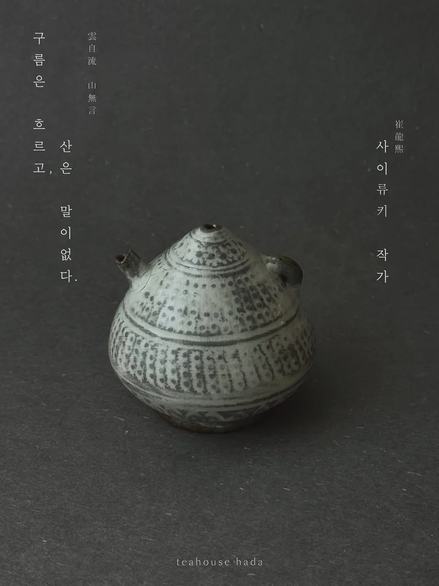
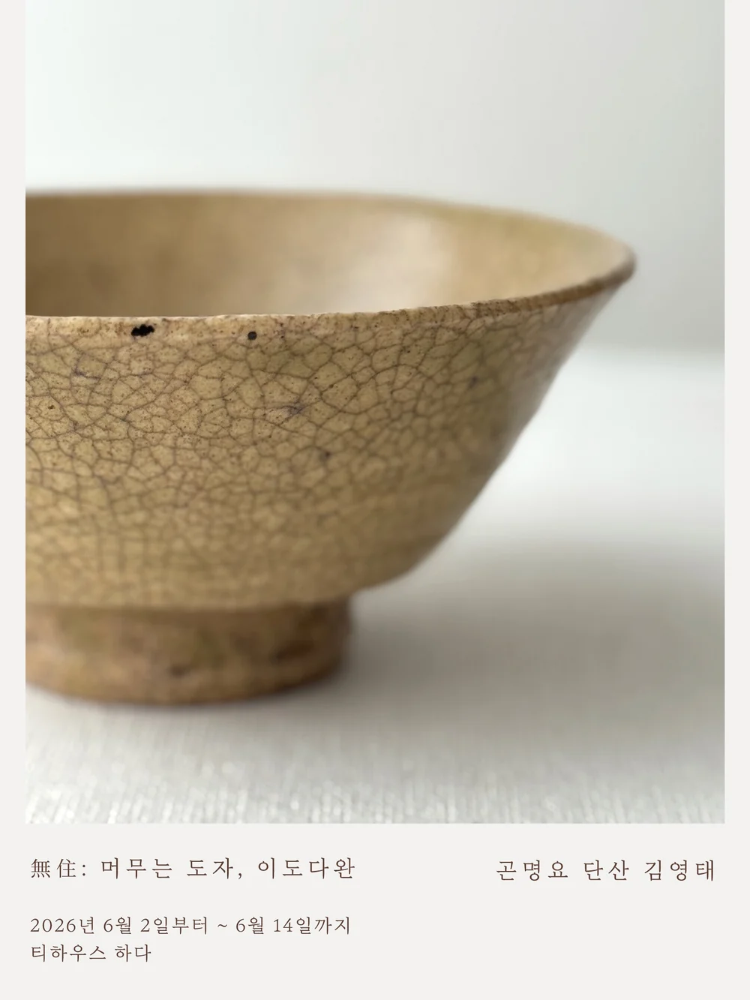
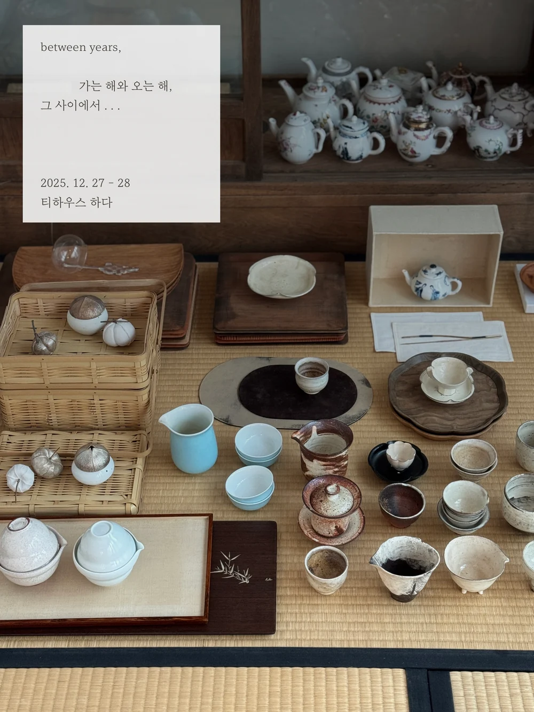
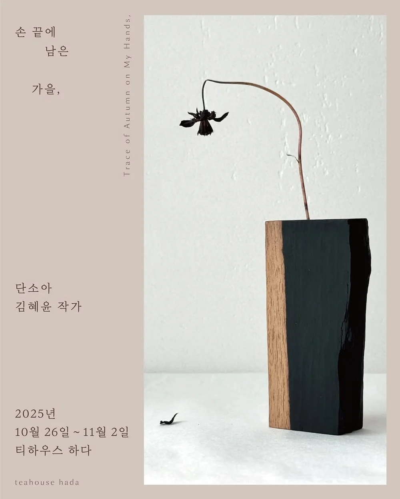
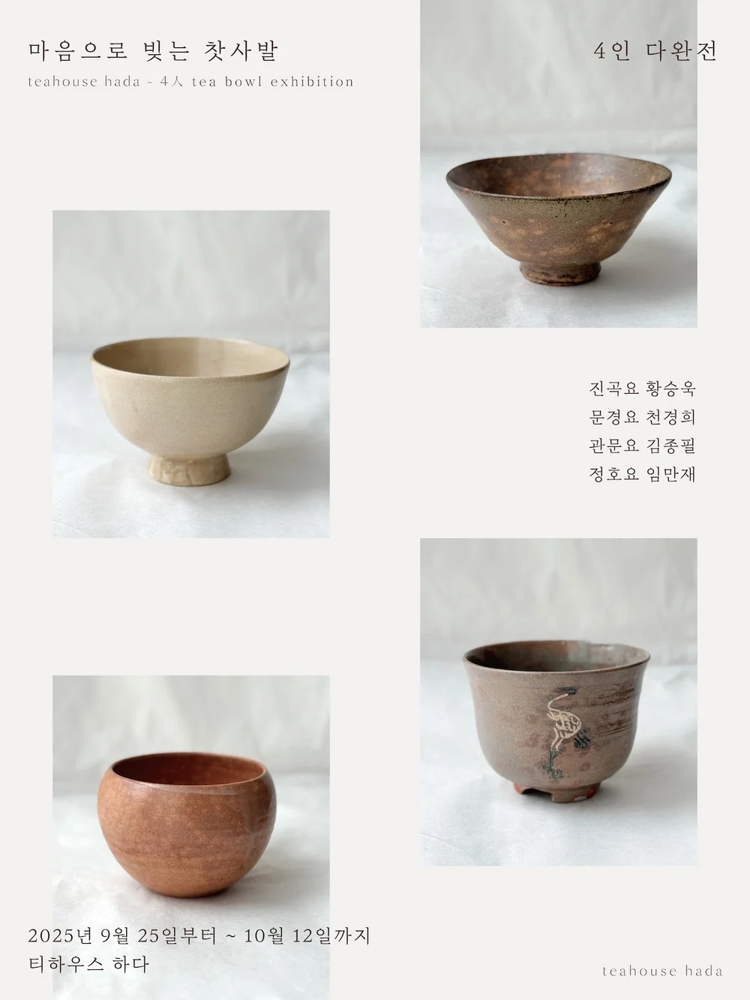

2026.07.10 – 07.19
RECENT EXHIBITION · CLOSED
구름은 흐르고,
전시 종료
계절이 전하는 감각 속에서 작품과 관람이 조화롭게 어우러지는 시간.
티하우스 하다는 차를 중심으로 공예와 예술을 감각적으로 소개합니다. 작품에 담긴 작가의 시선과 재료의 결을 천천히 마주하고, 전시와 연계 프로그램을 통해 차와 예술이 이어지는 경험을 전합니다.
전시 소식 살펴보기전시는 작품을 감상하는 데서 그치지 않고, 차를 통해 작품과 사람 사이의 거리를 천천히 좁혀가는 자리입니다.
공예와 예술에 담긴 재료, 손길, 시간의 흔적을 살펴보며 계절의 감각을 함께 느껴보세요. 작가와의 만남 등 전시 연계 프로그램은 작품을 더욱 깊이 이해하는 경험으로 이어집니다.
티하우스 하다에서 열렸던
전시의 기록을 살펴봅니다.





티하우스 하다는 차를 중심으로 예술과 일상이 이어지는 순간을 만들어갑니다. 전시 관람 및 협업 문의는 공식 안내를 통해 확인해 주세요.
티하우스 하다 알아보기